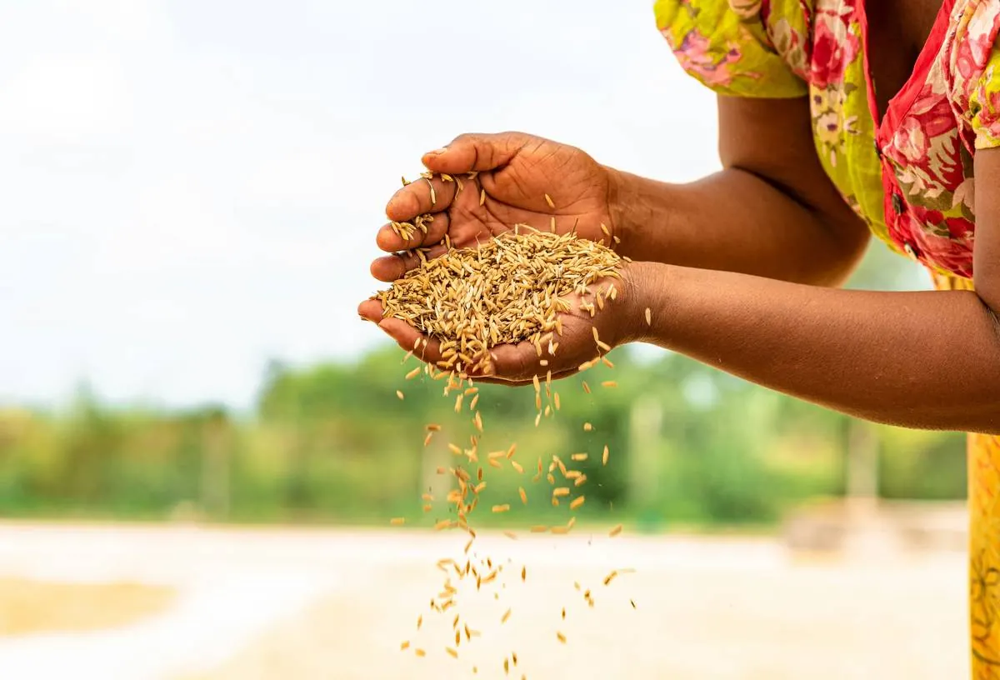
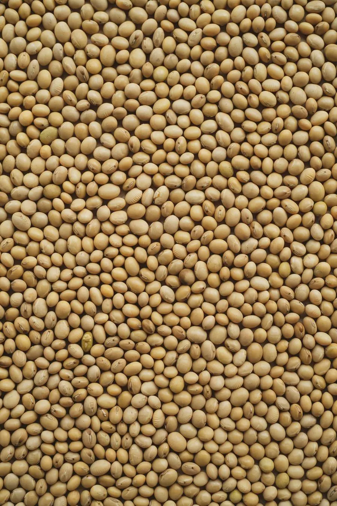
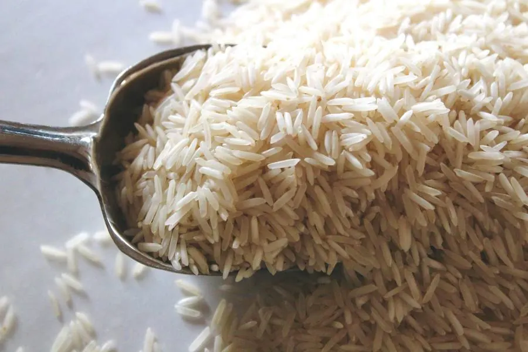
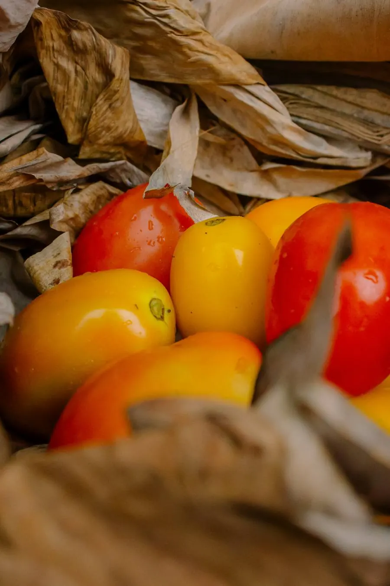

What We Export
Quality From Ghana, Delivered Worldwide.
Carefully sourced agricultural products from Ghana, prepared for reliable supply to international markets.

Millet
Sourced from Ghanaian smallholder farms and aggregated under consistent quality grading for international food processing and export buyers.
- Origin: Ghana

Organic Soybeans
High-protein soybeans suited to oil extraction, animal feed and food production, grown under sustainable farming practices.
- Origin: Ghana
- End uses: oil extraction, animal feed, food production

Ghanaian Rice
Rice grown on Ghanaian plantations and through partner smallholder farmers, graded and prepared for export.
- Origin: Ghana

Fresh Vegetables
Seasonal fresh vegetables including tomatoes, peppers, okra and leafy greens, handled for farm-to-port freshness.
- Origin: Ghana
- Varieties: tomatoes, peppers, okra, leafy greens